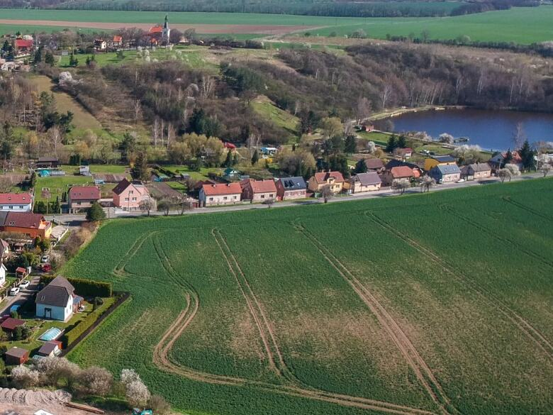
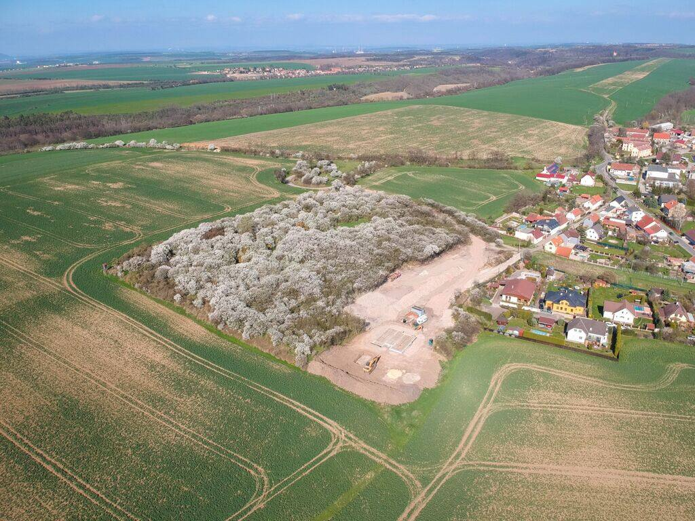

Une base commune
- Environ 150 m² habitables sur deux niveaux
- Carport pour deux voitures et local de rangement attenant
- Séjour ouvert sur le jardin

U zapomenutého sadu · Au verger oublié
7 terrains en bordure d'un verger protégé. Sur chacun, une maison d'environ 150 m² dessinée par un architecte pour ce terrain.
Lancement des ventes prévu début 2027
Le terrain en avril, vu depuis le verger. Au fond, le village et l'église Saint-Venceslas.
4+kk : quatre pièces et une cuisine ouverte sur le séjour.
01Avancement
Cette frise est mise à jour à chaque étape franchie.
02Les terrains
Six terrains de 500 à 550 m² et un terrain de 1 200 m². Tous s'ouvrent au sud. Au nord, le verger. Côté rue, une impasse.
Faites glisser le plan pour voir les 7 terrains.
Plan schématique, non contractuel. Position du terrain de 1 200 m² [À CONFIRMER AVEC LA CLIENTE].
03Les maisons
L'architecte a dessiné les maisons pour ces sept terrains : leur taille, leur orientation au sud et la vue sur la vallée.
Vous choisissez l'aménagement intérieur : 4+kk ou 5+kk, deux ou trois salles de bains. Une chambre de plus ou un bureau : le plan s'adapte avant la signature du contrat de construction.
Les maisons sont préfabriquées en atelier puis montées sur le terrain. Le constructeur est une entreprise allemande présente en République tchèque depuis plus de 30 ans. Livraison sous un an après la signature du contrat de construction.

04Le lieu
Le verger qui borde les terrains est abandonné depuis 1990. Les mirabelliers y ont poussé librement. Il est classé biocorridor : on ne pourra jamais y construire. Votre jardin restera face à des arbres.
La rue se termine au lotissement. Seuls les habitants y circulent.
Les maisons sont orientées au sud. Depuis l'étage : la vallée de Dřetovice, le village et l'église Saint-Venceslas sur sa colline.
L'aéroport est à 13 minutes en voiture. Les terrains sont en dehors des couloirs de décollage et d'atterrissage.
05Accès
Autoroute D7, sortie 9. Limite de Prague en 15 minutes, aéroport Václav Havel en 13 minutes.
Lignes vers Kladno, l'aéroport et Prague.
Gare de Dřetovice sur la ligne Kladno-Kralupy nad Vltavou, avec correspondances vers Prague.
Distances par la route depuis le terrain, arrondies.
50,1838° N · 14,2027° E
Dřetovice, district de Kladno. La carte est chargée depuis Mapy.com après votre clic.
06Au quotidien
07Dřetovice
1233Première mention écrite

08Vue du ciel

La vidéo est chargée depuis YouTube après votre clic.
09Acheter
Deux contrats, deux interlocuteurs.
Vous l'achetez à La Maison du Bonheur.
Vous signez le contrat de construction directement avec le constructeur.
Vous remplissez le formulaire. Nous vous informons dès l'ouverture des ventes.
Sur rendez-vous, à Dřetovice.
Elle réserve votre terrain.
Signé avec le constructeur. Vous y fixez la disposition et les options de votre maison.
Le terrain est enregistré à votre nom au cadastre en 3 mois environ.
Sous un an après la signature du contrat de construction.
Vous financez le terrain et la maison par votre banque ou votre courtier. Nous ne donnons pas de conseil en financement. Nous fournissons les documents du projet que demande la banque.
Le lancement des ventes est prévu début 2027. La date exacte dépend du raccordement électrique. Les personnes inscrites via le formulaire sont prévenues en premier.
Les prix seront communiqués à l'ouverture des ventes. Ils dépendent des travaux de viabilisation en cours. Prix sur demande via le formulaire.
[À CONFIRMER AVEC LA CLIENTE]
Le permis de construire des maisons est en cours d'instruction. Les retours des organismes consultés sont attendus au printemps 2027.
La viabilisation est en cours : eau, électricité et tout-à-l'égout. La date du raccordement électrique dépend du gestionnaire de réseau.
Oui. Vous choisissez entre une disposition 4+kk et 5+kk, et entre deux ou trois salles de bains. L'aménagement intérieur se règle avec le constructeur avant la signature du contrat de construction.
La maison est livrée sous un an après la signature du contrat de construction. Les éléments sont préfabriqués en atelier puis montés sur le terrain.
[À CONFIRMER AVEC LA CLIENTE]
Frais d'avocat ou de notaire pour les contrats, frais d'inscription au cadastre, frais de dossier bancaire. [Montants À CONFIRMER AVEC LA CLIENTE]
[À CONFIRMER AVEC LA CLIENTE : taux sur le terrain et sur la maison]
Par un prêt immobilier auprès de votre banque ou de votre courtier. Nous fournissons les documents du projet nécessaires au dossier.
11Contact
Téléphone
[CONTACT À CONFIRMER]